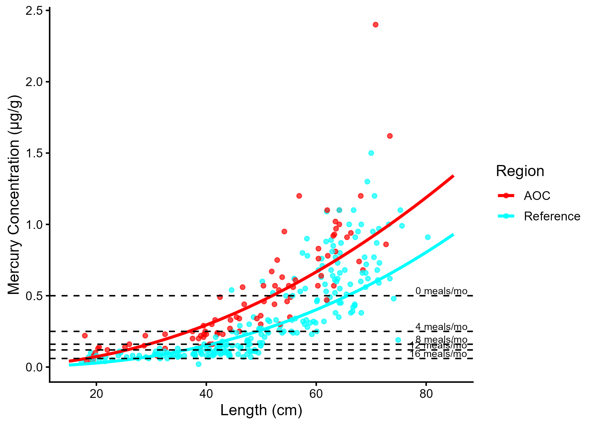
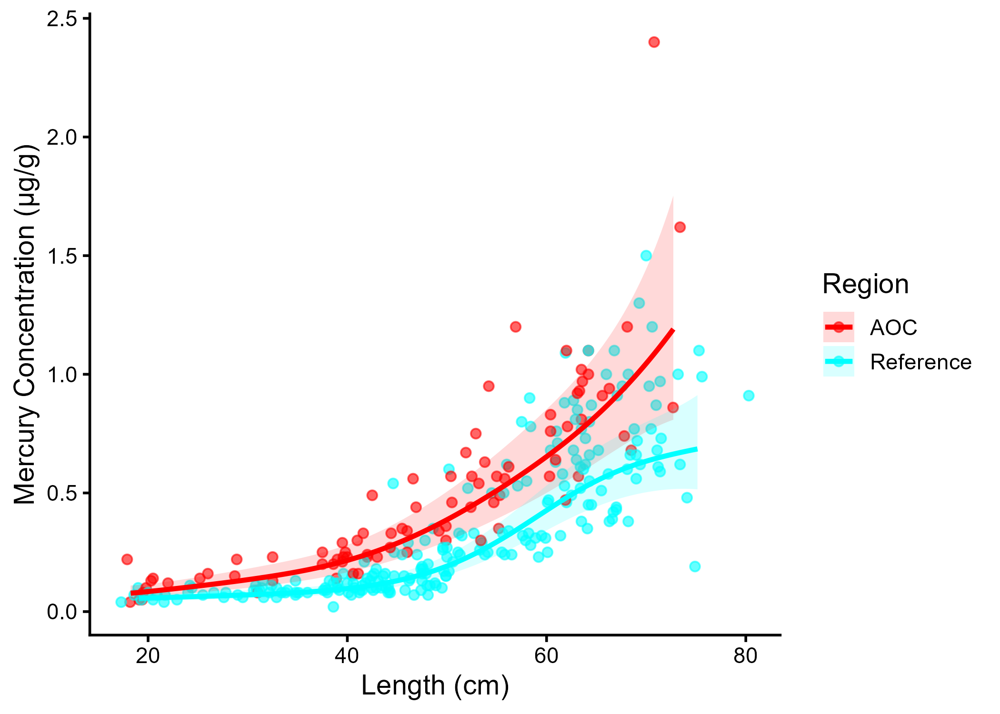

Chapter 3 Results
3.2 Tier 1 Assessment for the St. Lawrence River (Cornwall/Akwesasne) AOC
Tier 1 assessment compares the official MECP consumption advisory information for each fish of interest to the desired consumption rate (in meals per month) as indicated by community survey. Table ?? summarizes the MECP advisory values for fish of interest in the St. Lawrence River (Cornwall/Akwesasne) AOC for both General and Sensitive, compared to each species’ community desired consumption rate. In total, just 1 of 10 species passed Tier 1 assessment (brown bullhead), with the rest failing and moving to Tier 2 (Table 3.1).
| Species | Tier 1 |
|---|---|
| Bluegill | ❌ |
| Brown Bullhead | ✔️ |
| Freshwater Drum | ❌ |
| Largemouth Bass | ❌ |
| Northern Pike | ❌ |
| Rock Bass | ❌ |
| Smallmouth Bass | ❌ |
| Walleye | ❌ |
| White Perch | ❌ |
| Yellow Perch | ❌ |
3.3 Tier 2 Assessment for the St. Lawrence River (Cornwall/Akwesasne) AOC
Tier 2 assessment compares the intensity of fish consumption advisories in the AOC to suitable reference sites. Reference sites for Tier 2 assessment should reflect background levels of intensity of advisories, i.e., they should represent geographically similar locations that are not AOCs. For the St. Lawrence River (Cornwall/Akwesasne) AOC, reference sites were non-AOC fishing zones in the upper St. Lawrence River (upstream of the Moses-Saunders Dam) and Lake Ontario for which advisories for species located in the AOC were available. The following reference sites were used for the Tier 2 analysis of the SLR AOC:
- Jordan Harbour (Lake Ontario)
- Lake Ontario (Western Basin)
- Frenchman Bay (Lake Ontario)
- McLaughlin Bay (Lake Ontario)
- Oshawa Harbour (Lake Ontario)
- Whitby Harbour (Lake Ontario)
- East Lake
- West Lake
- Consecon Lake
- St. Lawrence River (Lake Ontario to Cornwall)
The consumption advisories for each fish of interest that failed Tier 1 in the AOC were compared to the median advisory (rounded to the nearest advisory level issued, see methods section X) level (in meals per month) of available reference sites for which advisories are issued for that species and size class. The results are summarized below in Table ??. Species where ALL size classes are equal to or above the median advisory level of the reference sites pass Tier 2 and are excluded from further analysis, otherwise the species fails Tier 2 and is carried forward to Tier 3 (Table 3.2). Species and size classes with fewer than 3 reference sites are considered data-deficient and the results are to be interpreted with caution. For the puposes of this assessment, data-deficient species fail Tier 2 automatically.
| Species | Tier 2 |
|---|---|
| Bluegill | ❌ ⚠️ |
| Freshwater Drum | ❌ ⚠️ |
| Largemouth Bass | ❌ |
| Northern Pike | ❌ |
| Rock Bass | ❌ |
| Smallmouth Bass | ❌ |
| Walleye | ❌ |
| White Perch | ❌ |
| Yellow Perch | ❌ |
⚠️ - Species has low reference site count (<3) at more than 50% of size classes.
3.4 Tier 3 Assessment for the St. Lawrence River (Cornwall/Akwesasne) AOC
Below, the full Tier 3 analysis is demonstrated for walleye. All other species of interest that passed Tier 2 are evaluated independently, and the results for which are presented in-text (with further details in Appendices). A full summary of Tier 3 results are summarized in Table 3.7.
3.4.1 Walleye
The following reference sites were used in the tier 3 analysis of walleye in the St. Lawrence River (Cornwall/Akwesasne) AOC:
AOC
- St. Lawrence River 15 - Cornwall - St Regis Island S
- St. Lawrence River 15 - Cornwall Island South
- St. Lawrence River 15 - Cornwall Waterfront
- St. Lawrence River 15 - Lake St. Francis
Reference
- Lake Ontario 10 - Middle Bay of Quinte
- Lake Ontario 11 - Lower Bay of Quinte/Eastern Lake Ontario
- Lake Ontario 2 - Twelve Mile Creek Port Dalhousie
- Lake Ontario 4a - Toronto Waterfront
- Lake Ontario 6 - Northwestern
- Lake Ontario 8
- Lake Ontario 9 - Upper Bay of Quinte
- Lake Ontario 9a - Trenton Nearshore
- Lake Ontario 9b - Belleville Nearshore
- St. Lawrence River 12 - Lower Thousand Island
- St. Lawrence River 13
3.4.1.1 Tier 3A Assessment for Walleye

Figure 3.1: Virtual mercury advisories in walleye. Predicted concentrations (curve) and observed values (points) by region using power regression model, compared to MECP advisory limits for mercury for the sensitive population (dashed lines).
Model Summary by Region
AOC: There is a statistically significant relationship between fish length and contaminant concentration. The power model used was: concentration = 0.000178 × Length2.01 (R² = 0.807, p = < 0.001).
Reference: There is a statistically significant relationship between fish length and contaminant concentration. The power model used was: concentration = 2.06e-05 × Length2.412 (R² = 0.718, p = < 0.001).
Population | Region | 15-20 | 20-25 | 25-30 | 30-35 | 35-40 | 40-45 | 45-50 | 50-55 | 55-60 | 60-65 | 65-70 | 70-75 | 75+ |
|---|---|---|---|---|---|---|---|---|---|---|---|---|---|---|
General | AOC | 32 | 32 | 32 | 16 | 16 | 12 | 8 | 8 | 4 | 4 | 4 | 4 | 4 |
Sensitive | AOC | 32 | 16 | 12 | 8 | 4 | 4 | 4 | 0 | 0 | 0 | 0 | 0 | 0 |
General | Reference | 32 | 32 | 32 | 32 | 32 | 16 | 16 | 16 | 12 | 8 | 8 | 4 | 4 |
Sensitive | Reference | 32 | 32 | 32 | 16 | 12 | 8 | 8 | 4 | 4 | 4 | 0 | 0 | 0 |
General population: Of 13 size bins, 5 were below the desired consumption rate of 8 meals/month. Of these, 3 were more restrictive than reference. Sensitive population: Of 13 size bins, 9 were below the desired consumption rate of 8 meals/month. Of these, 6 were more restrictive than reference. Overall, Tier 3A assessment for walleye is unsupportive.
Tier 3A Overall Decision: Unsupportive
3.4.1.2 Tier 3B

Figure 3.2: Mercury concentration in Walleye by length in the AOC compared to reference sites. Points are observed contaminant values, curves represent GAM model fit (with random effects dropped for simplicity,), ribbons represent 95% confidence interval.
Generalized Additive Models (GAMs) were used to model the relationship between fish length and mercury concentrations for Walleye in the AOC and reference sites. The length–contaminant relationship differed significantly between sites (interaction test p = 0.0493) (Figure 3.2). Model-predicted concentrations were calculated across the observed size range for which observations existed for both regions (every 5 cm from 20 to 70 cm) and are presented in Table 3.4. Asterisks (*) denote sizes where the AOC differs significantly (p < 0.05) from one or more reference site(s); this occurred at 11 of 11 lengths evaluated
| Region | 20 cm | 25 cm | 30 cm | 35 cm | 40 cm | 45 cm | 50 cm | 55 cm | 60 cm | 65 cm | 70 cm |
|---|---|---|---|---|---|---|---|---|---|---|---|
| AOC | 0.08 (0.06–0.12)* | 0.11 (0.08–0.15)* | 0.13 (0.1–0.18)* | 0.17 (0.13–0.22)* | 0.22 (0.17–0.28)* | 0.29 (0.22–0.38)* | 0.39 (0.3–0.51)* | 0.51 (0.39–0.67)* | 0.65 (0.5–0.85)* | 0.83 (0.63–1.08)* | 1.05 (0.76–1.44)* |
| Reference | 0.06 (0.04–0.08) | 0.06 (0.05–0.08) | 0.07 (0.06–0.09) | 0.08 (0.06–0.1) | 0.1 (0.08–0.12) | 0.13 (0.11–0.16) | 0.19 (0.15–0.24) | 0.29 (0.24–0.37) | 0.43 (0.34–0.53) | 0.55 (0.44–0.69) | 0.63 (0.5–0.8) |
Of 11 fish lengths evaluated, 11 had significantly higher predicted mercury concentrations in the AOC compared to reference (p < 0.05). (Table 3.4). Therefore, Tier 3B analysis of walleye is considered unsupportive for redesignation.
Tier 3B Overall Decision: Unsupportive
3.4.1.3 Tier 3C
| Upper Quartile Length (cm) | Predicted Conc. (Current Year) | Unrestrictive Conc. | Years to Threshold | 95% CI | Outcome |
|---|---|---|---|---|---|
| 60 | 0.59 | 0.16 | 85.8 | 68.0–103.7 | Unsupportive |

Figure 3.3: Projected mercury concentration in upper-quartile-length walleye in the AOC. Predicted concentration is based on GAMM-derived half-life decay model. The solid line represents predicted values within the temporal range of observations, the dashed line represents projected future concentrations, ribbons show 95% CI, and the horizontal dotted line represents the unrestrictive mercury threshold for the sensitive population, based on community desired consumption rate and MECP advisory thresholds.
For upper-quartile length (60 cm) fish, it is predicted to take about 85.8 years (95% CI 68–103.7) to reach an unrestrictive monthly meal allowance of 8 meals/month for the Sensitive population. Therefore, Tier 3C is considered unsupportive.
Tier 3C Overall Decision: Unsupportive
3.4.1.4 Summary
A summary of Tier 3 assessment results can be found in table 3.6. Overall, results from this species are unsupportive of redesignation.
| Tier | Description | Metric | Outcome |
|---|---|---|---|
| Tier 3A | Virtual Advisory | General: 3/13 size bins restrictive or more restrictive than reference; Sensitive: 6/13 size bins restrictive or more restrictive than reference | Unsupportive |
| Tier 3B | Contaminant Concentration vs Reference | Significantly different smooth terms (p = 0.0492531); 11/11 lengths with higher AOC concentration | Unsupportive |
| Tier 3C | Temporal Trends | Approximately 85.8 years (95% CI 68–103.7) to reach an unrestrictive meal allowance for upper-quartile-length (60 cm) fish. | Unsupportive |
3.4.2 Largemouth Bass
3.4.2.1 Tier 3A
Virtual advisory values were generated using by modelling the relationship between fish length and contaminant concentration for largemouth bass and mercury.
Model Summary by Region
Reference: There is a statistically significant relationship between fish length and contaminant concentration. The power model used was: concentration = 0.000474 × Length1.724 (R² = 0.591, p = < 0.001).
AOC: There is a statistically significant relationship between fish length and contaminant concentration. The power model used was: concentration = 0.00188 × Length1.502 (R² = 0.616, p = < 0.001).
General population: Of 9 size bins, 3 were below the desired consumption rate of 8 meals/month. Of these, 3 were more restrictive than reference. Sensitive population: Of 9 size bins, 7 were below the desired consumption rate of 8 meals/month. Of these, 7 were more restrictive than reference. Therefore, Tier 3A analysis of largemouth bass is considered unsupportive for redesignation.
3.4.2.2 Tier 3B
Generalized Additive Models (GAMs) were used to model the relationship between fish length and mercury concentrations for largemouth bass in the AOC and reference regions. The length-contaminant relationship did not differ significantly between sites (interaction test p = 0.438). Marginal mean concentrations were estimated across the full size distribution using a reduced model with shared smooths. The estimated marginal mean Mercury concentration in the AOC was -1.45 µg/g (95% CI: -1.86–-1.04). Estimated values for reference site(s): Reference: -2.01 µg/g (95% CI: -2.19–-1.83).
The AOC has a higher marginal mean concentration than reference, suggesting elevated contamination in this species compared to reference. Therefore, Tier 3B analysis of largemouth bass is considered unsupportive for redesignation.
3.4.2.3 Tier 3C
Temporal trends in largemouth bass for mercury were assessed using generalized additive mixed models (GAMMs) across all years of data, and a model test was performed to estimate the time required to reach a nonrestrictive monthly meal allowance for the upper quantile fish length (rounded to the nearest 5 cm) for sensitive populations. For upper-quartile length (30 cm) fish, it is predicted to take about 14.3 years (95% CI 5–23.7) to reach an unrestrictive monthly meal allowance of 8 meals/month for the Sensitive population. Therefore, Tier 3C is considered unsupportive for redesignation.
3.4.2.4 Tier 3 Summary
| Tier | Description | Metric | Outcome |
|---|---|---|---|
| Tier 3A | Virtual Advisory | General: 3/9 size bins restrictive or more restrictive than reference; Sensitive: 7/9 size bins restrictive or more restrictive than reference | Unsupportive |
| Tier 3B | Contaminant Concentration vs Reference | No significant difference in smooth terms (p = 0.438); AOC marginal mean higher than reference | Unsupportive |
| Tier 3C | Temporal Trends | Approximately 14.3 years (95% CI 5–23.7) to reach an unrestrictive meal allowance for upper-quartile-length (30 cm) fish. | Unsupportive |
3.4.3 Northern Pike
3.4.3.1 Tier 3A
Virtual advisory values were generated using by modelling the relationship between fish length and contaminant concentration for northern pike and mercury.
Model Summary by Region
Reference: There is a statistically significant relationship between fish length and contaminant concentration. The power model used was: concentration = 9.55e-06 × Length2.412 (R² = 0.365, p = < 0.001).
AOC: There is a statistically significant relationship between fish length and contaminant concentration. The power model used was: concentration = 5e-05 × Length2.168 (R² = 0.709, p = < 0.001).
General population: Of 12 size bins, 1 were below the desired consumption rate of 8 meals/month. Of these, 1 were more restrictive than reference. Sensitive population: Of 12 size bins, 6 were below the desired consumption rate of 8 meals/month. Of these, 6 were more restrictive than reference. Therefore, Tier 3A analysis of northern pike is considered unsupportive for redesignation.
3.4.3.2 Tier 3B
Generalized Additive Models (GAMs) were used to model the relationship between fish length and mercury concentrations for northern pike in the AOC and reference regions. The length-contaminant relationship did not differ significantly between sites (interaction test p = 0.816). Marginal mean concentrations were estimated across the full size distribution using a reduced model with shared smooths. The estimated marginal mean Mercury concentration in the AOC was -0.91 µg/g (95% CI: -1.37–-0.46). Estimated values for reference site(s): Reference: -1.46 µg/g (95% CI: -1.69–-1.23).
The AOC has a higher marginal mean concentration than reference, suggesting elevated contamination in this species compared to reference. Therefore, Tier 3B analysis of northern pike is considered unsupportive for redesignation.
3.4.3.3 Tier 3C
Temporal trends in northern pike for mercury were assessed using generalized additive mixed models (GAMMs) across all years of data, and a model test was performed to estimate the time required to reach a nonrestrictive monthly meal allowance for the upper quantile fish length (rounded to the nearest 5 cm) for sensitive populations. For upper-quartile length (70 cm) fish, it is predicted to take about 66.2 years (95% CI 43.1–89.3) to reach an unrestrictive monthly meal allowance of 8 meals/month for the Sensitive population. Therefore, Tier 3C is considered unsupportive for redesignation.
3.4.3.4 Tier 3 Summary
| Tier | Description | Metric | Outcome |
|---|---|---|---|
| Tier 3A | Virtual Advisory | General: 1/12 size bins restrictive or more restrictive than reference; Sensitive: 6/12 size bins restrictive or more restrictive than reference | Unsupportive |
| Tier 3B | Contaminant Concentration vs Reference | No significant difference in smooth terms (p = 0.816); AOC marginal mean higher than reference | Unsupportive |
| Tier 3C | Temporal Trends | Approximately 66.2 years (95% CI 43.1–89.3) to reach an unrestrictive meal allowance for upper-quartile-length (70 cm) fish. | Unsupportive |
3.4.4 Smallmouth Bass
3.4.4.1 Tier 3A
Virtual advisory values were generated using by modelling the relationship between fish length and contaminant concentration for smallmouth bass and mercury.
Model Summary by Region
AOC: There is a statistically significant relationship between fish length and contaminant concentration. The power model used was: concentration = 0.000724 × Length1.713 (R² = 0.722, p = < 0.001).
Reference: There is a statistically significant relationship between fish length and contaminant concentration. The power model used was: concentration = 0.000183 × Length1.973 (R² = 0.751, p = < 0.001).
General population: Of 9 size bins, 2 were below the desired consumption rate of 8 meals/month. Of these, 2 were more restrictive than reference. Sensitive population: Of 9 size bins, 6 were below the desired consumption rate of 8 meals/month. Of these, 5 were more restrictive than reference. Therefore, Tier 3A analysis of smallmouth bass is considered unsupportive for redesignation.
3.4.4.2 Tier 3B
Generalized Additive Models (GAMs) were used to model the relationship between fish length and mercury concentrations for smallmouth bass in the AOC and reference regions. The length-contaminant relationship did not differ significantly between sites (interaction test p = 0.427). Marginal mean concentrations were estimated across the full size distribution using a reduced model with shared smooths. The estimated marginal mean Mercury concentration in the AOC was -1.19 µg/g (95% CI: -1.44–-0.94). Estimated values for reference site(s): Reference: -1.73 µg/g (95% CI: -1.88–-1.57).
The AOC has a higher marginal mean concentration than reference, suggesting elevated contamination in this species compared to reference. Therefore, Tier 3B analysis of smallmouth bass is considered unsupportive for redesignation.
3.4.4.3 Tier 3C
Temporal trends in smallmouth bass for mercury were assessed using generalized additive mixed models (GAMMs) across all years of data, and a model test was performed to estimate the time required to reach a nonrestrictive monthly meal allowance for the upper quantile fish length (rounded to the nearest 5 cm) for sensitive populations. For upper-quartile length (45 cm) fish, it is predicted to take about 69.4 years (95% CI 57.8–81.1) to reach an unrestrictive monthly meal allowance of 8 meals/month for the Sensitive population. Therefore, Tier 3C is considered unsupportive for redesignation.
3.4.4.4 Tier 3 Summary
| Tier | Description | Metric | Outcome |
|---|---|---|---|
| Tier 3A | Virtual Advisory | General: 2/9 size bins restrictive or more restrictive than reference; Sensitive: 5/9 size bins restrictive or more restrictive than reference | Unsupportive |
| Tier 3B | Contaminant Concentration vs Reference | No significant difference in smooth terms (p = 0.427); AOC marginal mean higher than reference | Unsupportive |
| Tier 3C | Temporal Trends | Approximately 69.4 years (95% CI 57.8–81.1) to reach an unrestrictive meal allowance for upper-quartile-length (45 cm) fish. | Unsupportive |
3.4.5 Yellow Perch
3.4.5.1 Tier 3A
Virtual advisory values were generated using by modelling the relationship between fish length and contaminant concentration for yellow perch and mercury.
Model Summary by Region
Reference: There is a statistically significant relationship between fish length and contaminant concentration. The power model used was: concentration = 0.000843 × Length1.509 (R² = 0.633, p = < 0.001).
AOC: There is a statistically significant relationship between fish length and contaminant concentration. The power model used was: concentration = 0.00576 × Length1.095 (R² = 0.546, p = < 0.001).
General population: Of 5 size bins, 0 were below the desired consumption rate of 8 meals/month. Of these, 0 were more restrictive than reference. Sensitive population: Of 5 size bins, 2 were below the desired consumption rate of 8 meals/month. Of these, 2 were more restrictive than reference. Therefore, Tier 3A analysis of yellow perch is considered unsupportive for redesignation.
3.4.5.2 Tier 3B
Generalized Additive Models (GAMs) were used to model the relationship between fish length and mercury concentrations for yellow perch in the AOC and reference regions. The length-contaminant relationship did not differ significantly between sites (interaction test p = 0.554). Marginal mean concentrations were estimated across the full size distribution using a reduced model with shared smooths. The estimated marginal mean Mercury concentration in the AOC was -2.31 µg/g (95% CI: -2.63–-1.99). Estimated values for reference site(s): Reference: -2.94 µg/g (95% CI: -3.1–-2.78).
The AOC has a higher marginal mean concentration than reference, suggesting elevated contamination in this species compared to reference. Therefore, Tier 3B analysis of yellow perch is considered unsupportive for redesignation.
3.4.5.3 Tier 3C
Temporal trends in yellow perch for mercury were assessed using generalized additive mixed models (GAMMs) across all years of data, and a model test was performed to estimate the time required to reach a nonrestrictive monthly meal allowance for the upper quantile fish length (rounded to the nearest 5 cm) for sensitive populations. For upper-quartile length (25 cm) fish, the current trend does not indicate declining mercury concentrations. Under the present trend, reaching an unrestrictive monthly meal allowance of 8 meals/month for the Sensitive population is not expected. Therefore, Tier 3C is considered unsupportive for redesignation.
3.4.5.4 Tier 3 Summary
| Tier | Description | Metric | Outcome |
|---|---|---|---|
| Tier 3A | Virtual Advisory | General: 0/5 size bins restrictive or more restrictive than reference; Sensitive: 2/5 size bins restrictive or more restrictive than reference | Unsupportive |
| Tier 3B | Contaminant Concentration vs Reference | No significant difference in smooth terms (p = 0.554); AOC marginal mean higher than reference | Unsupportive |
| Tier 3C | Temporal Trends | Trend does not indicate a decline; target not reachable under current trend. | Unsupportive |
3.4.6 Bluegill, Channel Catfish, and Rock Bass
There were an insufficient number of observed records of bluegill (7 observations across 2 years of data), channel catfish (17 observations across 2 years of data), rock bass (24 observations across 3 years of data), and white perch (7 observations across 2 years of data) in the AOC from which to draw conclusions at the Tier 3 level. Thus, these species automatically fail Tier 3, and will be considered holistically as part of Tier 4 assessment.
3.4.7 Tier 3 Summary
Table 3.7 summarizes the results of tier 3 assessment for each species. Lines of evidence are evaluated independently, and the overall decision for each species is based on whether or not the majority of evidence lines are supportive of redesignating.
| Species | Tier 3A | Tier 3B | Tier 3C | Tier 3 Overall |
|---|---|---|---|---|
| Bluegill | Insufficient Data | Insufficient Data | Insufficient Data | Unsupportive |
| Available years: 2; observations: 7 (require ≥5 years and ≥30 observations in the AOC) | Available years: 2; observations: 7 (require ≥5 years and ≥30 observations in the AOC) | Available years: 2; observations: 7 (require ≥5 years and ≥30 observations in the AOC) | ||
| Channel Catfish | Insufficient Data | Insufficient Data | Insufficient Data | Unsupportive |
| Available years: 2; observations: 17 (require ≥5 years and ≥30 observations in the AOC) | Available years: 2; observations: 17 (require ≥5 years and ≥30 observations in the AOC) | Available years: 2; observations: 17 (require ≥5 years and ≥30 observations in the AOC) | ||
| Largemouth Bass | Unsupportive | Unsupportive | Unsupportive | Unsupportive |
| General: 3/9 size bins restrictive or more restrictive than reference; Sensitive: 7/9 size bins restrictive or more restrictive than reference | No significant difference in smooth terms (p = 0.438); AOC marginal mean higher than reference | Approximately 14.3 years (95% CI 5–23.7) to reach an unrestrictive meal allowance for upper-quartile-length (30 cm) fish. | ||
| Northern Pike | Unsupportive | Unsupportive | Unsupportive | Unsupportive |
| General: 1/12 size bins restrictive or more restrictive than reference; Sensitive: 6/12 size bins restrictive or more restrictive than reference | No significant difference in smooth terms (p = 0.816); AOC marginal mean higher than reference | Approximately 66.2 years (95% CI 43.1–89.3) to reach an unrestrictive meal allowance for upper-quartile-length (70 cm) fish. | ||
| Rock Bass | Insufficient Data | Insufficient Data | Insufficient Data | Unsupportive |
| Available years: 3; observations: 24 (require ≥5 years and ≥30 observations in the AOC) | Available years: 3; observations: 24 (require ≥5 years and ≥30 observations in the AOC) | Available years: 3; observations: 24 (require ≥5 years and ≥30 observations in the AOC) | ||
| Smallmouth Bass | Unsupportive | Unsupportive | Unsupportive | Unsupportive |
| General: 2/9 size bins restrictive or more restrictive than reference; Sensitive: 5/9 size bins restrictive or more restrictive than reference | No significant difference in smooth terms (p = 0.427); AOC marginal mean higher than reference | Approximately 69.4 years (95% CI 57.8–81.1) to reach an unrestrictive meal allowance for upper-quartile-length (45 cm) fish. | ||
| Walleye | Unsupportive | Unsupportive | Unsupportive | Unsupportive |
| General: 3/13 size bins restrictive or more restrictive than reference; Sensitive: 6/13 size bins restrictive or more restrictive than reference | Significantly different smooth terms (p = 0.0492531); 11/11 lengths with higher AOC concentration | Approximately 85.8 years (95% CI 68–103.7) to reach an unrestrictive meal allowance for upper-quartile-length (60 cm) fish. | ||
| Yellow Perch | Unsupportive | Unsupportive | Unsupportive | Unsupportive |
| General: 0/5 size bins restrictive or more restrictive than reference; Sensitive: 2/5 size bins restrictive or more restrictive than reference | No significant difference in smooth terms (p = 0.554); AOC marginal mean higher than reference | Trend does not indicate a decline; target not reachable under current trend. |